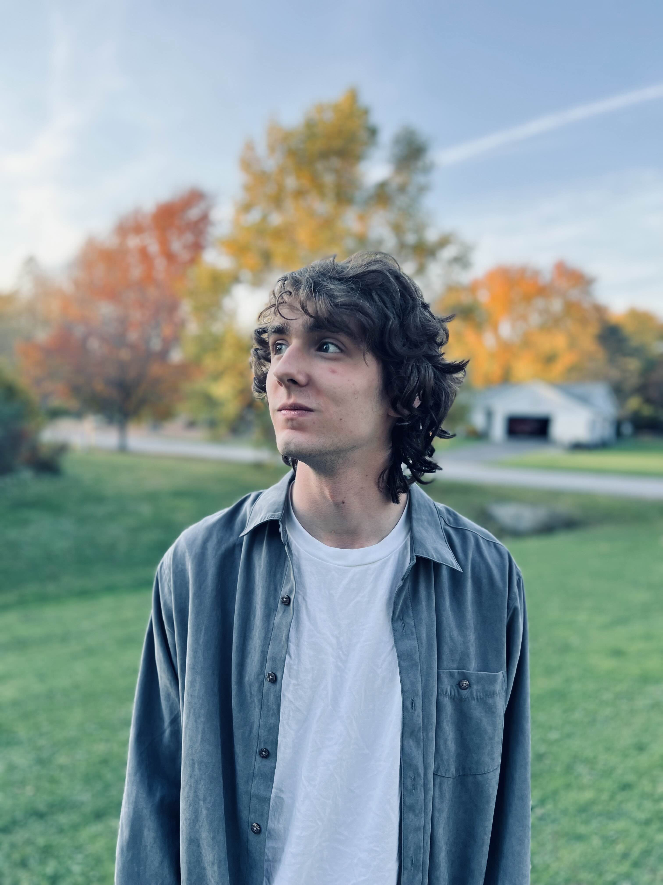
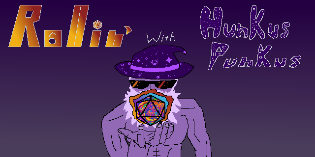
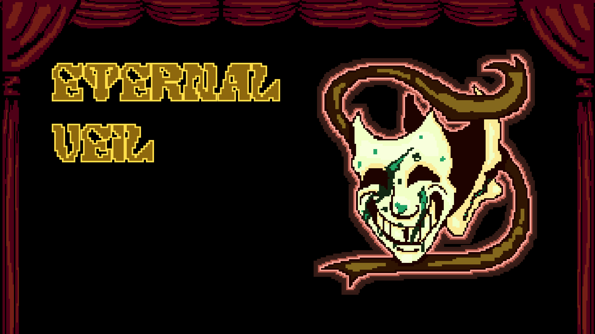
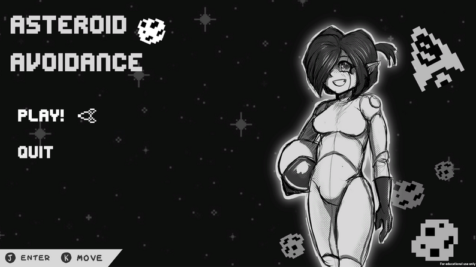
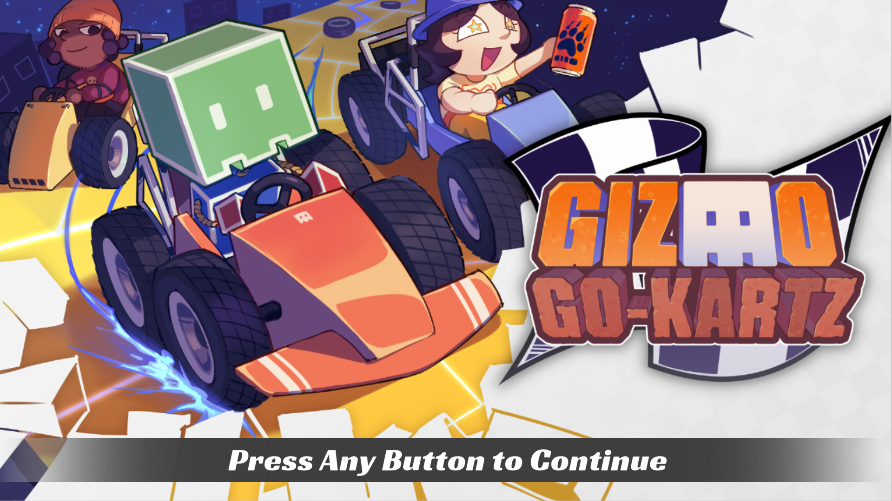
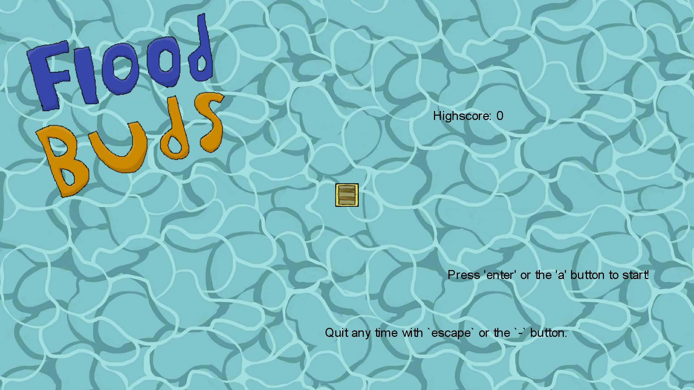
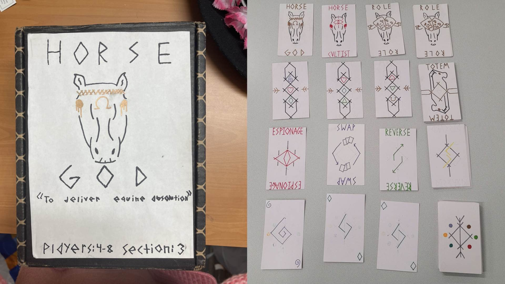
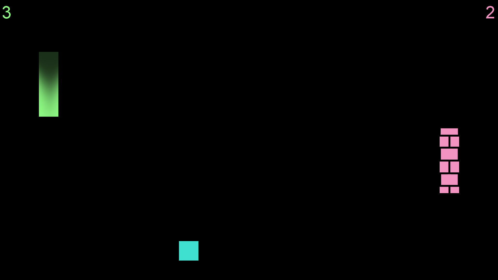
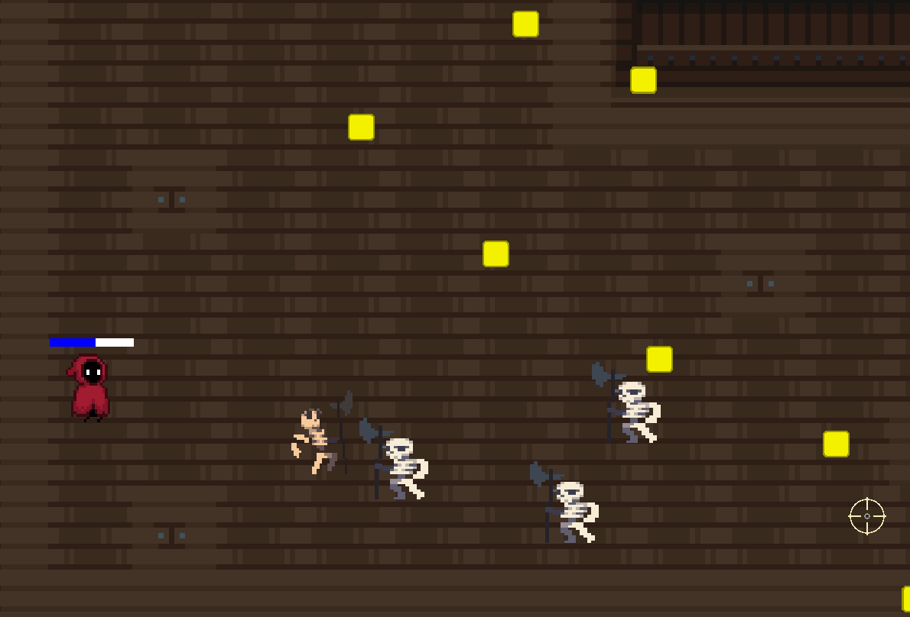

J o s h u a S m i t h
I am a fourth year Game Design & Development student attending the Rochester Institute of Technology. While majoring in Game Design, I am also pursuing a minor in both Cybersecurity and Psychology. I am a very passionate programmer, and I prefer to work in C++ or C#, but I am also proficient in Java, C, JavaScript, and Python as well. Not to mention web-based languages like HTML, CSS, and Bootstrap.
Aside from that, I thoroughly enjoy playing largely Nintendo and Indie games. My favorite game of all time is Octopath Traveler, but I am also a large fan of The Legend of Zelda series in general.
Email: jes6450@rit.edu

R o l l i n ' W i t h H u n k u s P u n k u s
Personal Project, March - April 2026
- Worked in team of two on what was originally a Game Jam project
- Did all of the programming for the entire game, using the MonoGame library
- Learned and implemented better user interface display techniques
- Learned how to make self-contained games, with icons and proper app names
- Voiced the wizard (it's weird that it happened twice)
E t e r n a l V e i l
GameJam Project, January - February 2026
- Worked on team of six to create a 2D short narrative experience in Unity
- Helped design and frame an abstract story for a short game within the Jam theme
- Created multiple sound effects for the game, and implemented all audio in code
- Assisted with resolving bugs and reframing the game's scope to fit our time constraints
- Made sure the flower audio was uncomfortable to hear...


S o c c e r S e a l
GameJam Project, December 2025
- Worked on team of two to make a 2D arcade game using MonoGame library
- Programmed the entire game, including wind and velocity mechanics
- Learned how to support 4K UHD monitors, and scale the game dynamically
- Designed all of the game mechanics, working within the given soccer theme
- Infused love of seals with game design
A s t e r o i d A v o i d a n c e
GameJam Project, November 2025
- Worked in team of five to create a 2D arcade-style bullet hell game in Unity
- Programmed the player spaceship, and made the movement feel good to use
- Helped design and balance several gameplay mechanics that fit the constraints
- Created all of the in-game sound effects, and implemented all audio in code
- Rolled the dice that determined our project's randomized theme and constraints


G i z m o G o - K a r t z
Professional Project, May - August, 2025
- Led an exceedingly talented team of 43 people, split into eight sub teams
- Spearheaded the project's creative direction and production pipeline
- Organized and led multiple weekly team-wide meetings, both in-person and online
- Made critical decisions, adapted to challenges quickly, and led a successful project
- Held two world records at the time we stopped paying for our backend database
Official Website itch.io GitHub
F l o o d B u d s
GameJam Project, July 2025
- Joined a short-notice GameJam more than halfway through its runtime
- Worked with two people who had never made a game before
- Orchestrated creation of art assets, and taught the team how to use MonoGame
- Designed simple but fun game mechanics fitting climate/weather theme
- Still not sure how we scraped this together working full time during the jam

F i s h i n g W i t h F r i e n d s
Personal Project, August 2024 - May 2025
- Worked solo on a large-scale 2D fishing game in MonoGame
- Implemented four player local multiplayer, with keyboard and controller input
- Designed 30 unique fish, each with unique appearances, mechanics, and weights
- Developed persistent multi-account save data, and complex fishing system
- Has a lower level player account than all of the titular friends
S e r v i n ' U p S p e l l s
Academic Project, August - December, 2024
- Worked as part of a team of five to create a 3D isometric shooter game in Unity
- Prototyped and designed the layout of the in-game level
- Created all sound effects used in game, and implemented all sound
- Facilitated playtests, and organized/implemented feedback received
- Voiced the wizard
H o r s e G o d
Academic Project, January - May, 2024
- Led a team of five to create a social deduction card game
- Iterated and designed several roles and gameplay rules through sprints
- Organized numerous playtests, documenting and implementing feedback received
- Pitched the game for development to the class, won the poll with the most votes
- May or may not have been the Horse God


J o n g
Personal Project, August - September, 2023
- Worked alone to create a humorous remaster of the classic title Pong in MonoGame
- Created numerous different types of balls, each featuring unique mechanics
- Designed a pixelated explosion spritesheet for scoring animation
- Features local multiplayer, paddle customization, and tennis scoring
- Named it after my own name plus the word "Pong"
C o l l e c t i c u b e s
Personal Project, April - June, 2023
- Worked solo to create a simple 2D arcade-style collection game using MonoGame
- Learned, tested, and implemented persistent save data recording
- Designed and balanced a linear difficulty progression
- Programmed several enemies, including a simple seek pattern AI
- Never earned enough cubes to buy all the avatars

R a i l g u n
Academic Project, January - May, 2023
- Worked on a team of five to create a top-down 2D bullet hell game in MonoGame
- Created the player class, including bullet and dashing core mechanics
- Implemented and fine tuned the basic enemy, which was re-used for all enemies
- Designed, implemented, and tested various game mechanics
- Never cleared Room 4